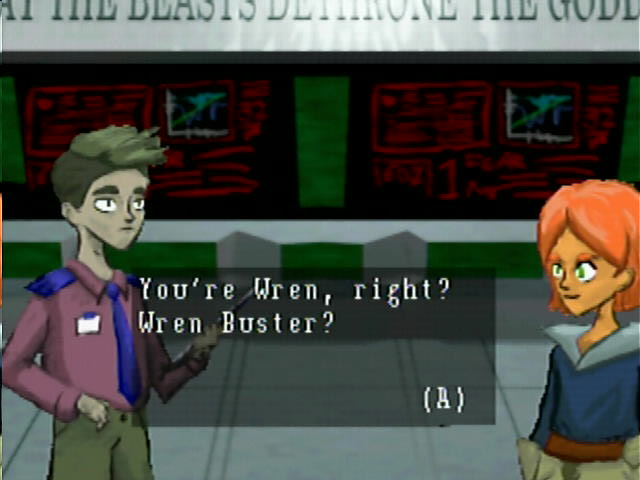
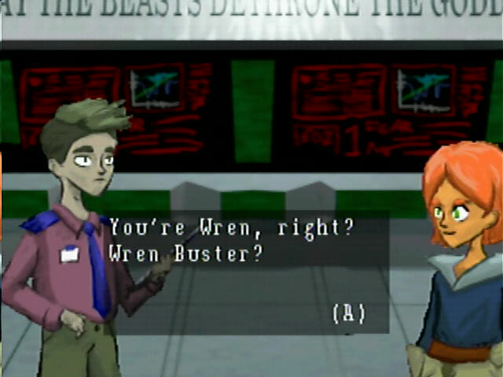

Interviews are CC BY-SA 4.0; Screenshots are likely fair use.

Telocation Gemini is lambertjamesd, jtn191, and Cobra!'s submission for the N64Brew Game Jam.
What got you into Nintendo 64 homebrew?
lambertjamesd: I always loved the Nintendo 64. It was my first game console and got me into gaming which eventually led to me learning to code. Once I discovered homebrew was within my reach for both technical skills to do it and tools to do it I jumped on it. Years ago I dreamed of making games for the Nintendo 64 and I can now make it a reality.
Cobra!: I've always been a fan of 5th generation of consoles, and have especially learned to appreciate the Nintendo 64 in recent years. I've always wanted to develop for older systems, or play a role in a game for them, so here I am!
How did you come up with the concept for your game? Was there anything about the jam's theme that stood out to you?
lambertjamesd: We listed out various ideas all voting on which ones we liked the most. We then found a way to combine the best parts of the ideas we liked. The specific idea we went with isn't too original but we were able to get it to fit the theme pretty well.
Cobra!: If I recall correctly, we decided on the robot idea fairly early on, and later on, we decided to have a 90s aesthetic, set in space, inspired by old Looney Tunes skits with Marvin the Martian and the Atompunk aesthetic.
What tools did you end up using to create your game?
lambertjamesd: CrashOverride's N64 SDK for Linux. The original sound tools from Nintendo. Fast64. My gdb debugger. I also created a few tools along the way.
Cobra!: I used Blender 2.79 and 2.8 to make the models for the game.
Is there anything you particularily enjoy about your game, or is there something you worked on that you're particularily proud of?
lambertjamesd: I really enjoy how the character movement and character interactions worked out. It is fun to play co-op and between the visuals and sounds the characters have a lot of life to them.
Cobra!: The game just feels very complete, it plays great and the sound design is amazing!
What sort of Nintendo 64 games have you enjoyed in particular? Is there a moment playing on the console that stands out to you?
lambertjamesd: Mario 64 and Ocarina of Time were the big ones. I have fond memories of many others too but I wont list them all. My family played Ocarina of Time together. There were many moments in that game that scared me and I hid behind the couch. I also remember my mind being blown after pulling out the master sword and becoming adult link. I thought the game would be done after collecting the 3 spiritual stones.
What was it like making the levels for Telocation Gemini? What sort of process did you have towards making them?
lambertjamesd: We started by brain storming mechanic ideas. We then came up with interesting levels with the mechanics. We would play test the levels and iterate one them. We then arranged the levels roughly by difficulty. We then determine what mechanics weren't properly introduced before being used. We would then make a level meant to showcase the mechanic in a way that is easy to figure out as a tutorial for that mechanic. We would try to ensure that all mechanics were introduced in a tutorial level before being used in more difficult puzzles. After that is was more play testing and refining levels even removing some levels entirely if they didn't seem to fit well.
How did you find authoring Nintendo 64 models in Blender? What was it like seeing your art running on hardware?
Cobra!:
If you were to expand on Telocation Gemini in some way, what would you want to try doing? Is there anything in particular you'd want to explore?
lambertjamesd: There were still some mechanics that I wanted to implement mostly around the robot attacking. I wanted the robot to be able to push a block around and introduce sliding bock puzzles. I also wanted some form of enemy that would be harmless to the robot but would be dangerous to the astronaut. Either of these mechanics would have made the attack more useful. I also would have liked to add some more visual detail the levels so they didn't feel so blocky. All the levels were designed in a level editor that operated in a grid. A grid was chosen to simplify building levels and the code around collision detection. This came with the downside of making everything feel less organic.
If someone wanted to get into homebrew today, would you have any advice or suggestions for them?
lambertjamesd: The Nintendo 64 is a difficult console but don't be intimated. There is a strong active community that can help you make your game. Start small if you need to. As you learn what seemed impossible before will be possible.


 

Website by Daniel Savage
Interviews are CC BY-SA 4.0; Screenshots are likely fair use.